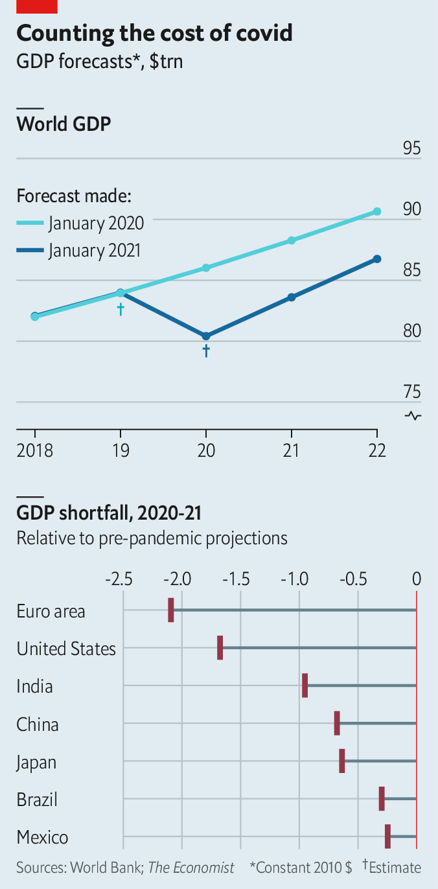

2021-01-20T07:15:48+00:00
The world economy
世界经济
世界經濟
Covid-10trn
新冠损失十万亿
新冠損失十萬億
Totting up the pandemic’s price tag
算算疫情的总账
算算疫情的總賬
THE ECONOMIC toll of the covid-19 pandemic is incalculable. But let’s try anyway. A useful starting point is the semi-annual Global Economic Prospects report released this week by the World Bank. It calculates that the world economy probably shrank by 4.3% in 2020, a setback matched only by the Depression and the two world wars. But this dramatic figure still understates the cost. It measures the world economy’s fall from where it was before the pandemic, not from where it would have been had the virus not spread.
新冠疫情造成的经济损失无法估量。但我们不妨试着算一下。世界银行最近发布了每半年一期的《全球经济展望》报告——这是个不错的入手点。世行预计2020年全球经济可能萎缩了4.3%，这样的衰退只有大萧条和两次世界大战时的情形可以一比。但这一惊人的数字仍然低估了疫情造成的损失。因为世行估算的世界经济下滑程度的参照点是疫情前的水平，而不是假设没有发生疫情的情况下经济所能达到的水平。
新冠疫情造成的經濟損失無法估量。但我們不妨試着算一下。世界銀行最近發布了每半年一期的《全球經濟展望》報告——這是個不錯的入手點。世行預計2020年全球經濟可能萎縮了4.3%，這樣的衰退只有大蕭條和兩次世界大戰時的情形可以一比。但這一驚人的數字仍然低估了疫情造成的損失。因為世行估算的世界經濟下滑程度的參照點是疫情前的水平，而不是假設沒有發生疫情的情況下經濟所能達到的水平。
To calculate that bigger fall, economists need an estimate of how global GDP might have evolved in the absence of covid-19. One simple baseline is the World Bank’s projection released this time last year, when it was still blissfully unaware of the lurking viral threat. Back then, it expected global GDP to expand by 2.5% in 2020 to $86trn. Compared with that figure, the shortfall of global GDP last year was probably more like 6.6%. That is equivalent to about $5.6trn (at the market exchange rates and prices prevailing in 2010, which the bank uses for analytical convenience).
要计算出那个更大的降幅，经济学家需要估算出如果没有新冠肺炎，全球GDP可能达到什么水平。一个简单的办法就是对照世行在去年此时发布的预测，当时该机构对潜伏的病毒威胁还浑然不觉。那时候，它预计2020年全球GDP将增长2.5%，达到86万亿美元。与这一数字相比，去年全球GDP的降幅可能更接近6.6%，相当于约5.6万亿美元（为便于分析，世行采用的是2010年的市场汇率和物价）。
要計算出那個更大的降幅，經濟學家需要估算出如果沒有新冠肺炎，全球GDP可能達到什麼水平。一個簡單的辦法就是對照世行在去年此時發布的預測，當時該機構對潛伏的病毒威脅還渾然不覺。那時候，它預計2020年全球GDP將增長2.5%，達到86萬億美元。與這一數字相比，去年全球GDP的降幅可能更接近6.6%，相當於約5.6萬億美元（為便於分析，世行採用的是2010年的市場匯率和物價）。
In 2021 the world economy should grow unusually briskly, the bank projects, helped by the roll-out of vaccines. But even if this expectation is met and no further calamities intrude, the level of output in 2021 will remain 5.3% below the bank’s pre-pandemic projections: a further shortfall of almost $4.7trn (see chart).
世行预计，得益于疫苗的推出，2021年世界经济应该会异常迅速地增长。但是，即使这一预期得以实现，且不再发生其他灾难，2021年的产出水平仍会比世行在疫情前的预测低5.3%，相当于再多出将近4.7万亿美元的损失（见图表）。
世行預計，得益於疫苗的推出，2021年世界經濟應該會異常迅速地增長。但是，即使這一預期得以實現，且不再發生其他災難，2021年的產出水平仍會比世行在疫情前的預測低5.3%，相當於再多出將近4.7萬億美元的損失（見圖表）。

Put these two numbers together and the cost of covid-19 this year and last will amount to about $10.3trn in forgone output: goods and services the world could have produced had it remained unafflicted. That is, to put it mildly, a big number. Only America and China have an annual GDP greater than $10trn. And there are 153 economies that produced less than that between them in 2019. Converted into today’s money, $10.3trn is enough to buy the ten biggest listed companies in the world, including Amazon, Apple and Saudi Aramco. It is also enough to buy all the property in New York City nine times over.
把这两个数字加在一起，今年和去年的损失数字将达到约10.3万亿美元，这是因新冠疫情而损失的产出：在没有疫情的情况下世界原本会生产出来、而现在不见了的那部分产品和服务。说得温和一点，这是个大数目。只有美国和中国的年GDP超过10万亿美元。而且在2019年，有153个经济体的GDP加在一起还不到10万亿美元。按现在的汇率和物价换算，10.3万亿美元足以收购包括亚马逊、苹果、沙特阿美在内的全球十大上市公司，也足以买下九个纽约市的所有房地产。
把這兩個數字加在一起，今年和去年的損失數字將達到約10.3萬億美元，這是因新冠疫情而損失的產出：在沒有疫情的情況下世界原本會生產出來、而現在不見了的那部分產品和服務。說得溫和一點，這是個大數目。只有美國和中國的年GDP超過10萬億美元。而且在2019年，有153個經濟體的GDP加在一起還不到10萬億美元。按現在的匯率和物價換算，10.3萬億美元足以收購包括亞馬遜、蘋果、沙特阿美在內的全球十大上市公司，也足以買下九個紐約市的所有房地產。
Over $2trn of the cost will be suffered by the euro area. America will bear roughly $1.7trn. Among developing countries, India is set to endure the biggest loss in dollar terms: about $950bn (although the bank’s forecast for India’s growth in 2021 seems unduly pessimistic). Although China’s economy is much bigger than that of India, it will suffer a smaller GDP shortfall of about $680bn.
其中，欧元区将损失2万多亿美元。美国将损失约1.7万亿美元。在发展中国家，按美元计算，印度有可能承受的损失最大，约为9500亿美元（不过世行对印度2021年经济增长的预测似乎过于悲观）。尽管中国经济总量远大于印度，但它的GDP损失会更小，约为6800亿美元。
其中，歐元區將損失2萬多億美元。美國將損失約1.7萬億美元。在發展中國家，按美元計算，印度有可能承受的損失最大，約為9500億美元（不過世行對印度2021年經濟增長的預測似乎過於悲觀）。儘管中國經濟總量遠大於印度，但它的GDP損失會更小，約為6800億美元。
Even these colossal numbers understate the cost, however. The economic damage, after all, will not be confined to this year and last. The World Bank expects global GDP in 2022 to remain 4.4% below its pre-pandemic predictions. It fears lasting harm to investment, human capital and, therefore, the growth potential of the world economy. It also worries that the debt that governments and companies have issued to help them weather the pandemic may harm growth in the future.
然而，即使是如此庞大的数字依然低估了损失。毕竟，疫情对经济造成的损害不会局限于今年和去年。世行预计，2022年全球GDP仍将比自己在疫情前的估算低4.4%。它担心这会对投资、人力资本、进而对世界经济的增长潜力造成持久的损害。它还担心，各国政府和企业为应对疫情而发行的债券可能会损害未来的经济增长。
然而，即使是如此龐大的數字依然低估了損失。畢竟，疫情對經濟造成的損害不會局限於今年和去年。世行預計，2022年全球GDP仍將比自己在疫情前的估算低4.4%。它擔心這會對投資、人力資本、進而對世界經濟的增長潛力造成持久的損害。它還擔心，各國政府和企業為應對疫情而發行的債券可能會損害未來的經濟增長。
There is another reason why these figures understate the economic tab. If the pandemic had never happened, world GDP would not only have been higher, it would also have been different. Instead of masks, tests, vaccines, Zoom calls and parcel deliveries, the world economy would have produced other items. Because the pandemic is so damaging to health and society, it is worth diverting vast resources to fight it—these efforts are of enormous economic value. But if the virus had never spread, these same efforts would have been unnecessary, making them an expense the world could have been spared. ■
之所以说这些数字低估了经济损失还有一个原因。如果新冠疫情从未发生过，世界GDP不仅会更高，其构成也会不同。世界经济原本会产出一些别的东西，而不是口罩、检测设备、疫苗、Zoom会议和快递。鉴于疫情对健康和社会的危害如此之大，调用庞大资源来抗击疫情是值得的——这些努力具有巨大的经济价值。但是，如果新冠病毒从来没有传播过，就不需要付出这些努力，也就可为世界各国省掉这笔费用。
之所以說這些數字低估了經濟損失還有一個原因。如果新冠疫情從未發生過，世界GDP不僅會更高，其構成也會不同。世界經濟原本會產出一些別的東西，而不是口罩、檢測設備、疫苗、Zoom會議和快遞。鑒於疫情對健康和社會的危害如此之大，調用龐大資源來抗擊疫情是值得的——這些努力具有巨大的經濟價值。但是，如果新冠病毒從來沒有傳播過，就不需要付出這些努力，也就可為世界各國省掉這筆費用。
Correction: In last week’s story on infrastructure investment (In the works, January 2nd) we mischaracterised CDPQ’s green-energy portfolio. The Canadian fund is a big shareholder of Invenergy but does not own it entirely. Sorry.